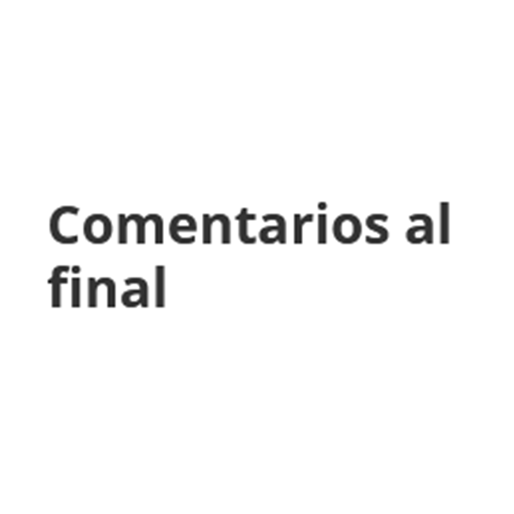

Adrián Rodríguez
Piezas interactivas y texto expandido
- Portafolio oms.1001
- Github /oms1001
- Escríbeme un correo
- Personal @adrinuk
- Comentarios al final @comentariosalfinal
- Fragmentos LPZ @fragmentoslpz
oms.1001@gmail.com


Crítica de poesía y arte
Web cómic de conversaciones escuchadas en La Paz y El Alto